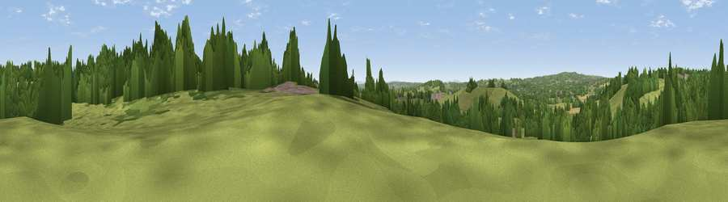

Weatheroak Hill
#39965 in England · top 83% of its area beats it · near PortwayThe view, rendered

A 360° render of this exact spot computed from the terrain model, tree cover and land cover — summer colours, afternoon light, calibrated against photographs of famous viewpoints. Real trees, hedges and buildings will differ in detail.
The panorama
Grey silhouette: terrain skyline in each direction (720 bearings, Earth curvature and refraction included). Dashed green: skyline with trees (+15 m) and buildings (+8 m) as obstacles. Blue strip: how far the ground is visible on each bearing.
Where the view opens
Wedge length = distance to the farthest visible ground on that bearing (vegetation-aware). Rings at 10, 25 and 50 km.
What fills the view
52% grassland · 38% woodland · 8% cropland · 3% built-up
Angular shares of the visible panorama (visual magnitude), not map area. Landscape diversity 0.44 (0–1 Shannon).
Key numbers
More beautiful places nearby
The staircase of upgrades: each row has a higher view potential than everything closer. Driving times are estimates from straight-line distance, calibrated against real road routing — check an actual route before setting out.
| Place | Direction | Drive | Score |
|---|---|---|---|
| Swans Hill | NW · 1 km | ~2 min | 44.4 |
| Viewpoint near Hopwood | NW · 3 km | ~7 min | 52.2 |
| Viewpoint near Hopwood | NW · 4 km | ~8 min | 57.7 |
| Viewpoint near Cofton Hackett | W · 6 km | ~13 min | 66.2 |
| Holywell Hill | WNW · 9 km | ~17 min | 69.4 |
| Windmill Hill | WNW · 9 km | ~18 min | 73.2 |
| Viewpoint near Clent | WNW · 14 km | ~25 min | 73.8 |
| Viewpoint near Clent | WNW · 14 km | ~26 min | 74.3 |
52.36560, -1.91399 · source: osm peak · position refined by local search. Computed location — check access rights before visiting.